Свіжий раунд — перший. Нижче залишені попередні раунди для порівняння.
Шрифт, послуги й каталог — як у варіанті 3 з першого раунду. «Цифри» і «Чому нам довіряють» — окремі секції. У кожного варіанта своя анімація шапки та робіт.
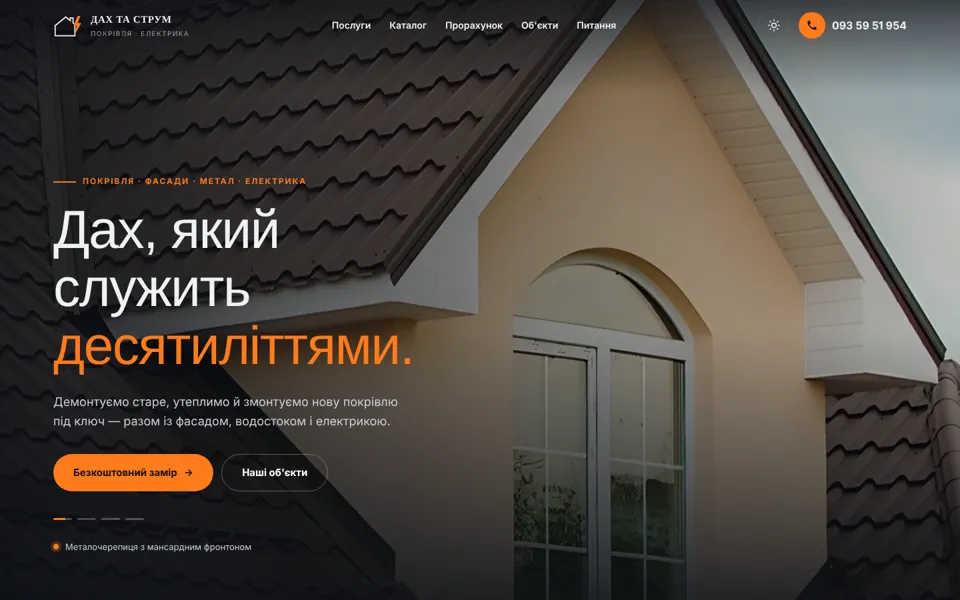
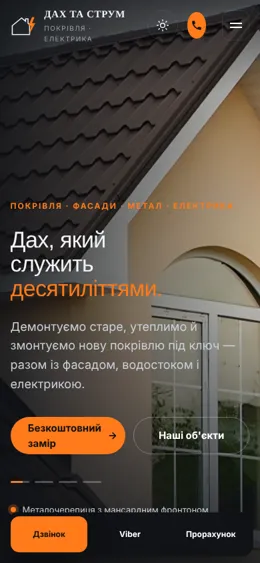
Фото на весь екран змінюються переходом у формі даху. Роботи — мозаїка, кожне фото відкривається шторкою.
Відкрити варіант 1 →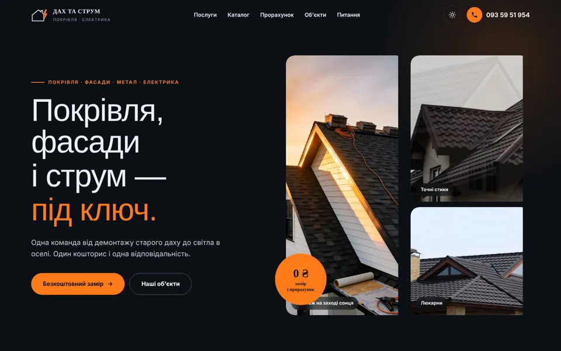
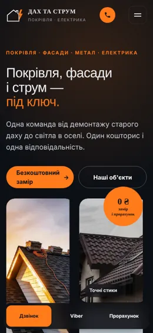
Текст ліворуч, колаж із фото праворуч: кадри виїжджають шторками і по черзі змінюються. Роботи — гармошка, панелі розкриваються одна за одною.
Відкрити варіант 2 →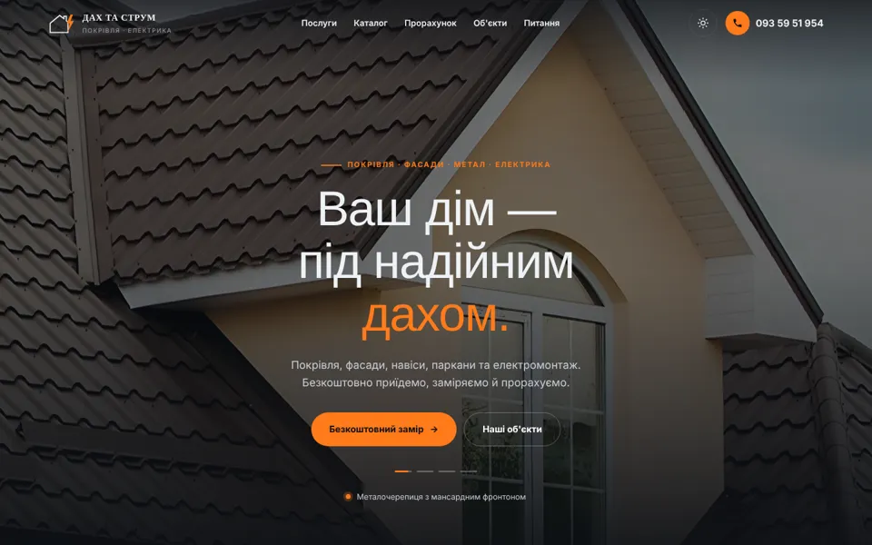
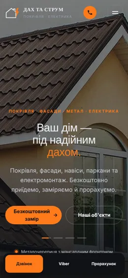
Після заставки силует будинку з логотипа розкривається на весь екран, а в ньому змінюються фото. Роботи — 3D-кільце, яке крутиться мишкою або пальцем.
Відкрити варіант 3 →Одна сторінка, анімації як на phservs.com, анімоване відкриття сторінки. Шапки — за трьома пінами.
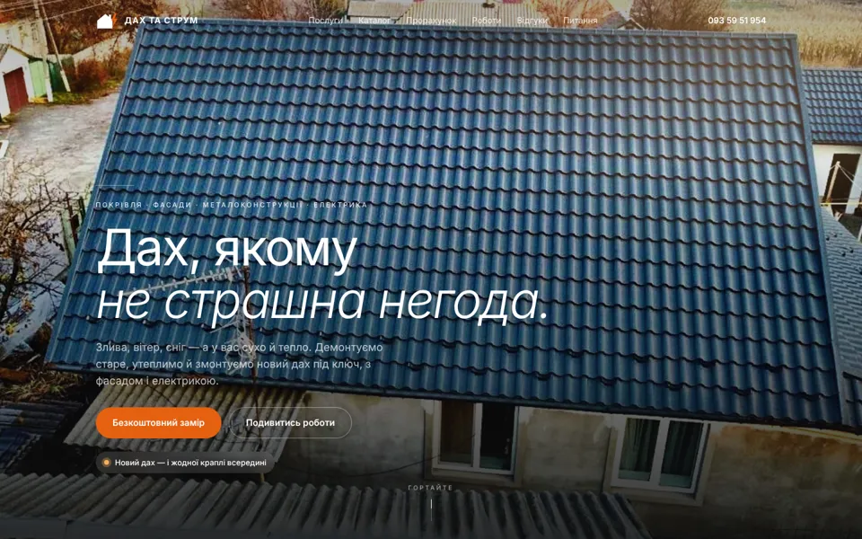
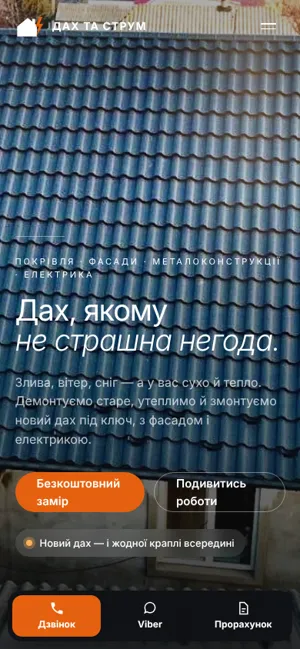
Дах під зливою з блискавкою, потім світлова шторка — і той самий дах у сонячному світлі.
Відкрити варіант 1 →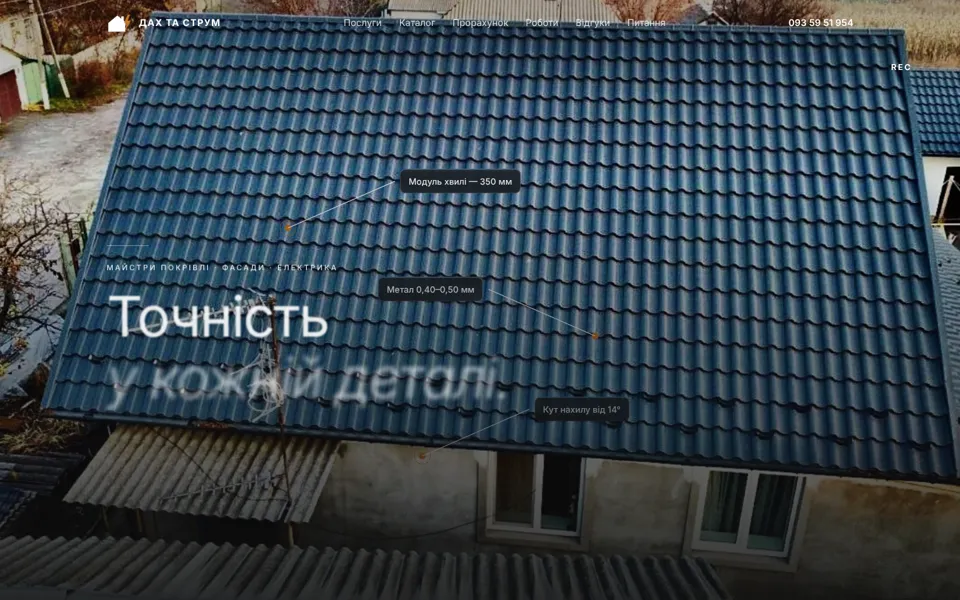
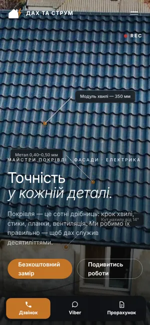
Камера «з рук» над дахом, а поверх неї по черзі малюються технічні позначки: модуль хвилі, товщина металу, кут нахилу.
Відкрити варіант 2 →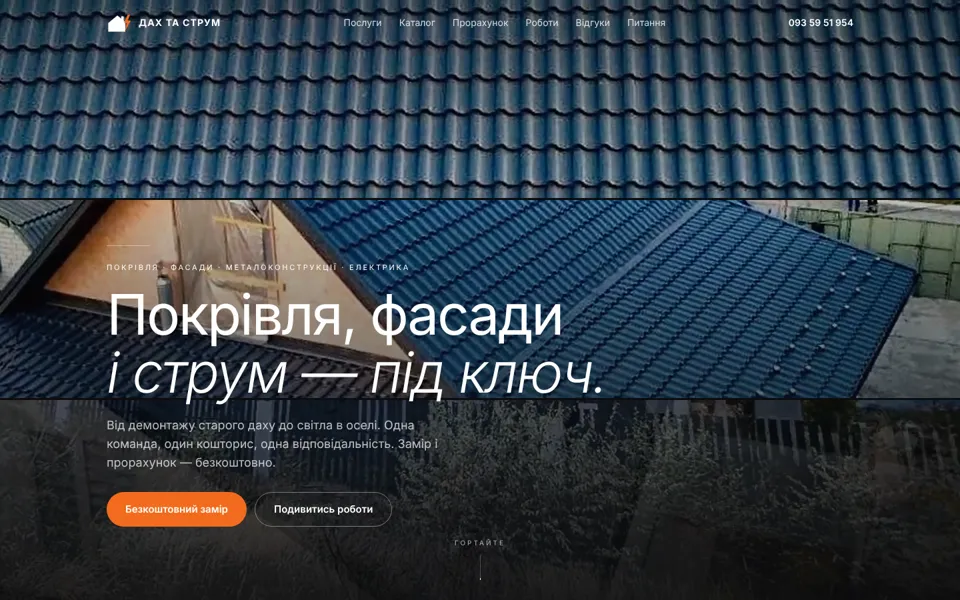
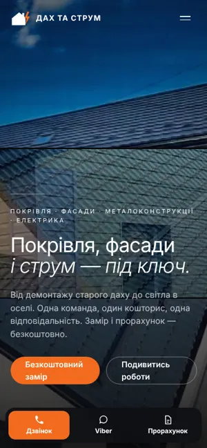
Проліт над дахами, потім екран ділиться на три кадри і знову зливається в один.
Відкрити варіант 3 →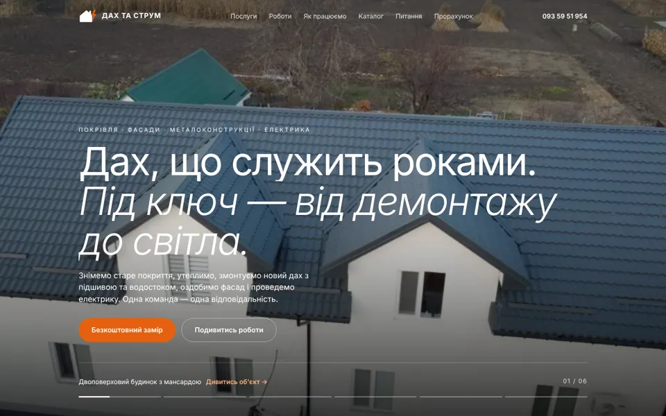
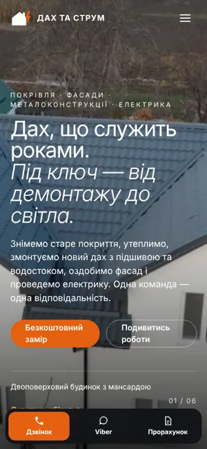
Найближчий до референсу: світлий, спокійний, преміальний. Темна кіно-шапка, легка типографіка, сітка послуг з фото.
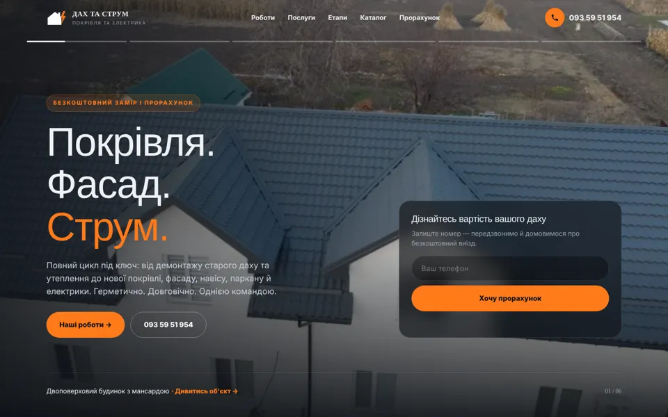
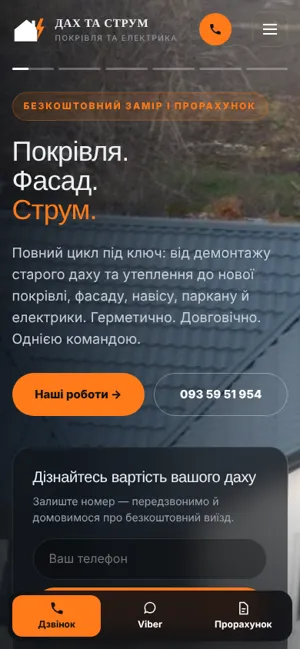
Розвиток варіанту 3, який сподобався: темний, технічний, яскравий помаранчевий. Індикатори рілса — як у сторіс.
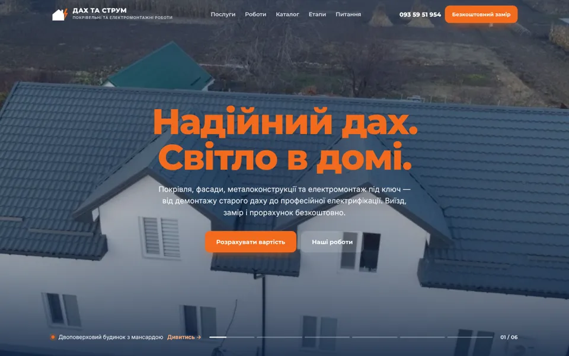
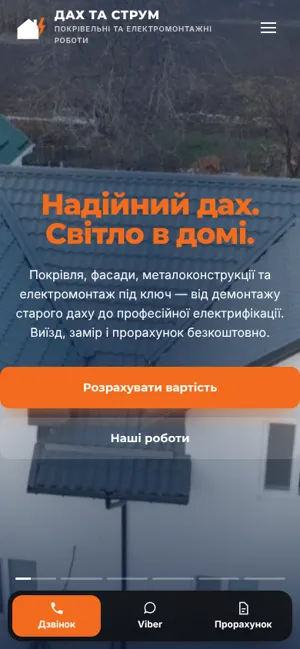
У кольорах логотипа клієнта: темно-синій і помаранчевий. Найбільш «народний» і довірчий, кнопка заміру завжди в меню.